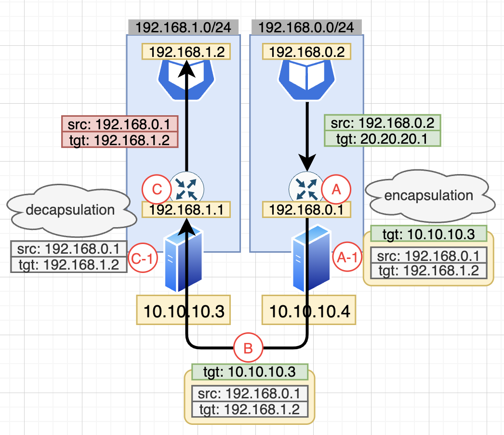

- [1교시] Kubernetes 구성요소 - 1 - etcd - kube-apiserver - kubelet - kube-scheduler - kube-proxy - [2교시] Kubernetes 구성요소 - 2 + Controller 란? - kube-controller-manager - cloud-controller-manager - [3교시] 싱글노드 Kubernetes 배포 - [4, 5교시] Kubernetes 인증 / 인가 / Admission Controller - [6교시] 네트워크
Quorum
⌊총 노드개수 / 2⌋ + 1
JSON
YAML
Protobuf
SPDY
kube-apiserver
kubectl exec
kubectl port-forward
kubectl attach
리소스를 관리
자신이 관리하는 노드에 배정된 Pod 를 보면
spec.nodeName
kube-scheduler
Filtering
Scoring
Gaming Controller
Micro Controller
Spring Controller
기본적인 컨셉은
-> Controller Pattern
link
for { desired := getDesiredState() current := getCurrentState() makeChanges(desired, current) }
kubectl get leases.coordination.k8s.io
K8s 의 거의 대부분의 요소는 기본적으로 컨트롤러 패턴을 따름
kubelet
kube-proxy
cloud-controller-manager
kube-controller-manager
Q. 노드 3개에 Replicas 가 99로 설정된 Deployment를 배포하면 kube-controller-manager 는 Pod 을 어떤 노드에 할당할까?
Q. ReadWriteOnce 특징을 가진 PV를 Deployment로 관리하면 어떻게 될까?
Q. Elasticsearch, etcd, ZooKeeper 를 Deployment 로 관리하기 까다로운 이유?
어디에도 Ingress 관련된 내용은 없음
하지만 실제 Ingress 는 잘 작동했었음
누가 Ingress 리소스를 보고서 우리가 원하는대로 설정을 해주는 것일까?
nginx.conf
nginx -s reload
HAProxy
만약 Ingress 가 아닌 다른것이 필요하다면?
Ingress
만약 Ingress 가 아닌 다른것이 필요하다면? => Custom Resource Definition (이하 CRD)
Custom Resource Definition
CRD
만약 Ingress 가 아닌 다른것이 필요하다면? => Custom Resource Definition (이하 CRD) => 자신이 원하는 리소스를 사용할 수 있도록 선언 해주는 리소스
선언
리소스
=> CRD 를 선언 하면 새로운 리소스 (=Custom Resource) 를 사용할 수 있다.
Custom Resource
링크
접속정보: https://docs.google.com/spreadsheets/d/1R3R_ol5lExWJ7k0RjKcVTIGl56QrQBFpWgLKWh6FTh0/edit?usp=sharing
접속키: https://drive.google.com/file/d/1fE3sCySXorn2Uv1sgZxD9UTiTBffmQVC/view?usp=sharing
# Kubernetes Network cat <<EOF | tee /etc/modules-load.d/k8s.conf overlay br_netfilter EOF cat <<EOF | tee /etc/sysctl.d/k8s.conf net.bridge.bridge-nf-call-iptables = 1 net.bridge.bridge-nf-call-ip6tables = 1 net.ipv4.ip_forward = 1 EOF # kubeadm, kubelet, kubectl apt-get update apt-get install -y apt-transport-https ca-certificates curl curl -fsSL https://packages.cloud.google.com/apt/doc/apt-key.gpg\ | gpg --dearmor -o /etc/apt/keyrings/kubernetes-archive-keyring.gpg echo "deb [signed-by=/etc/apt/keyrings/kubernetes-archive-keyring.gpg] https://apt.kubernetes.io/ kubernetes-xenial main"\ | tee /etc/apt/sources.list.d/kubernetes.list apt-get update apt-get install -y kubelet kubeadm kubectl apt-mark hold kubelet kubeadm kubectl # Containerd apt-get install -y containerd cat <<EOF | tee /etc/crictl.yaml runtime-endpoint: unix:///run/containerd/containerd.sock image-endpoint: unix:///run/containerd/containerd.sock EOF mkdir /etc/containerd containerd config default | tee /etc/containerd/config.toml sed -i 's/ SystemdCgroup = false/ SystemdCgroup = true/' /etc/containerd/config.toml
kubeadm init --pod-network-cidr 10.244.0.0/16 mkdir -p $HOME/.kube cp -i /etc/kubernetes/admin.conf $HOME/.kube/config kubectl apply -f https://github.com/flannel-io/flannel/releases/latest/download/kube-flannel.yml
인증 + 인가 = 내가 이걸 할 수 있는지 알아내는것
K8s 에서 인증과 인가에 대한 인터페이스는 간단함
// 인증 type Request interface { AuthenticateRequest(req *http.Request) (*Response, bool, error) } // Response 의 내용물 type user.Info interface { GetName() string GetGroups() []string GetUID() string // 동일한 Name 구분용이긴 한데, audit 이외에 잘 활용 X GetExtra() map[string][]string // 특수한케이스에서 사용 }
// 인가 type Authorizer interface { Authorize(ctx context.Context, a Attributes) (authorized Decision, reason string, err error) } type Attributes interface { // User Group | GVK Namespace Name Subresource | Verb } type Decision int const ( DecisionDeny Decision = iota DecisionAllow DecisionNoOpinion )
CN
O
system:serviceaccounts
system:serviceaccount:(NAMESPACE):(SERVICEACCOUNT)
sub
groups
X-Remote-User
X-Remote-Group
curl -k \ --cert /etc/kubernetes/pki/front-proxy-client.crt \ --key /etc/kubernetes/pki/front-proxy-client.key \ -H "X-Remote-Group: system:masters" \ -H "X-Remote-User: help" \ https://127.0.0.1:6443/apis
다양한 방식이 존재하지만 결론은
HTTP 요청에서 아래 정보 알아내기
HTTP 요청에서
type Decision int const ( DecisionDeny Decision = iota DecisionAllow DecisionNoOpinion )
위 정보 알아내기
K8s 에서 RBAC 은 2가지 Scope 가 존재
/apis/${GroupVersion}/${kind}
/apis/${GroupVersion}/namespaces/${namespace}/${kind}
ClusterRole 리소스 보기 src
kubectl get clusterrole system:kube-scheduler -o json | jq
kubectl get clusterrole system:auth-delegator -o json | jq

1시간
1시간 30분
2시간